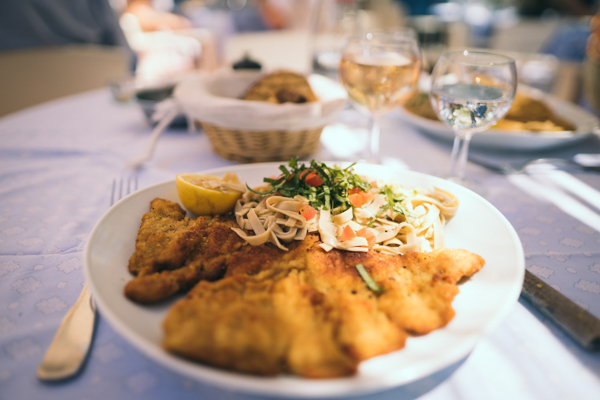

Die Geschichte des Schnitzels
Wusstest du, dass Schnitzel bis 1514 mit echtem Gold paniert wurden? Die Vorläufer des panierten Schnitzels lassen sich sogar bis ins neunte Jahrhundert n. Chr. verfolgen und am Tische des oströmischen Kaisers Basileus in Byzanz wurden besonders wertvolle Fleischstücke mit Blattgold überzogen. So wurde dem Kaiser als Zeichen der Ehrerbietung „goldenes Fleisch“ gereicht. Weil Gold aber schon immer teuer und begehrt war, haben findige Bürger das Blattgold durch eine goldgelbe Hülle aus Semmelbröseln ersetzt.
Der Brauch verbreitete sich schnell durch Kulturträger nach Nordafrika, Südeuropa und sogar langsam weiter in den Norden. Besonders im reichen Mailand stand die neue Art der Speisenzubereitung für hohes Ansehen der Gastgeber. Mitte des 10. Jahrhunderts wurde diese Mailänder Spezialität, das „Cotoletta Milanese“ nach Wien gebracht, angeblich vom legendären Feinschmecker (Feldherrn) Radetzky. Dort wurde es schnell zum festen Bestandteil der bäuerlichen Hochzeitsküche. Interessanterweise wurde das panierte Schnitzel in Österreich zunächst als Zwischenmahlzeit und als Mitternachtsspeise populär.
Erst nach 1900 tauchte der Begriff „Wiener Schnitzel“ erstmals in der Kochkultur auf. Vom slowakischen Militär stammt die Methode, das Schnitzel schön dünn auseinander zu klopfen. Weil Fleisch dort Mangelware war, wurde es möglichst dünn und breit geklopft, damit jeder Soldat wenigstens ein Stückchen abbekommen sollte.